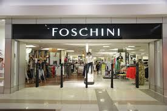
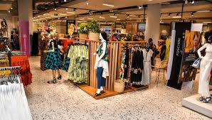
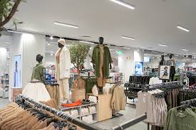

FOSCHINI
TFG Limited (commonly known as TFG and formerly The Foschini Group), is a South African retail clothing group, which trades under various brands, and has more than 3,000 stores within its portfolio.[3] It is headquartered in Cape Town.
In 2015, the company acquired the British apparel chain Phase Eight[4][5] from TowerBrook Capital Partners, then valued at £300 million.
WHERE WILL YOU FIND THIS STORE?
1ST Floor